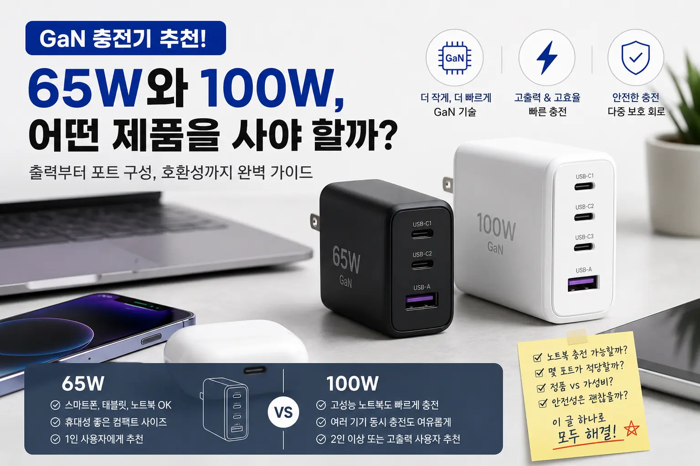

GaN 충전기 추천! 65W와 100W, 어떤 제품을 사야 할까?

핵심 요약
스마트폰·태블릿·가벼운 노트북 위주라면 65W GaN 충전기가 가장 무난합니다. 노트북까지 빠르게 충전하거나 여러 기기를 동시에 연결한다면 100W GaN 충전기가 더 여유롭습니다. 단순히 숫자만 볼 것이 아니라 USB-C PD, PPS, 포트별 출력 배분, 안전 인증까지 함께 확인해야 실패가 적습니다.
GaN 충전기란 무엇일까?
GaN 충전기는 기존 실리콘 기반 충전기 대신 질화갈륨 소재를 활용한 고효율 충전기를 말합니다. 쉽게 말하면 같은 출력의 충전기를 더 작게 만들기 쉽고, 전력 변환 효율도 높이기 좋은 구조입니다. 그래서 최근에는 스마트폰 충전기뿐 아니라 노트북 충전기, 멀티포트 충전기, 여행용 충전기 시장에서도 GaN 제품이 빠르게 늘고 있습니다.
예전에는 노트북 충전기라고 하면 큼직한 어댑터와 두꺼운 케이블을 떠올렸지만, 요즘은 손바닥만 한 USB-C 충전기 하나로 노트북과 스마트폰을 함께 충전할 수 있습니다. 특히 재택근무, 카페 작업, 출장, 여행이 잦은 사람에게 GaN 충전기는 체감 만족도가 높은 제품군입니다.
65W와 100W, 가장 큰 차이는 출력 여유
65W와 100W의 차이는 단순히 충전 속도만의 문제가 아닙니다. 핵심은 어떤 기기를 몇 개까지 안정적으로 충전할 수 있느냐입니다. 스마트폰 하나만 충전한다면 65W와 100W의 차이가 크게 느껴지지 않을 수 있습니다. 하지만 노트북을 함께 충전하거나, 태블릿·이어폰·보조배터리까지 동시에 연결하면 출력 차이가 바로 체감됩니다.
| 구분 | 65W GaN 충전기 | 100W GaN 충전기 |
|---|---|---|
| 추천 사용자 | 스마트폰, 태블릿, 경량 노트북 사용자 | 노트북 중심 사용자, 여러 기기 동시 충전 사용자 |
| 휴대성 | 작고 가벼운 편 | 65W보다 크지만 여전히 휴대 가능 |
| 노트북 충전 | 맥북 에어, 경량 노트북에 적합 | 맥북 프로급, 고출력 노트북에 더 적합 |
| 동시 충전 | 2대 정도 사용 시 무난 | 3대 이상 연결 시 여유로움 |
| 가격 | 상대적으로 저렴 | 더 비싸지만 활용 폭이 넓음 |
65W 충전기는 이런 사람에게 추천
65W GaN 충전기는 가장 대중적인 선택입니다. 스마트폰, 태블릿, 무선이어폰, 보조배터리, 경량 노트북을 쓰는 사람이라면 대부분 65W로 충분합니다. 특히 맥북 에어, LG 그램 같은 저전력 노트북은 65W USB-C PD 충전기로도 일상적인 문서 작업, 웹서핑, 영상 시청 수준에서는 큰 불편이 없습니다.
또한 65W 제품은 크기가 작고 가격도 비교적 부담이 적습니다. 가방에 넣어 다니기 좋고, 사무실 책상 위에 두어도 공간을 많이 차지하지 않습니다. 1인 사용자라면 100W까지 가지 않아도 만족도가 높은 경우가 많습니다.
스마트폰과 노트북을 동시에 충전할 일이 많지 않고, 충전기를 매일 들고 다닌다면 65W 제품이 가성비와 휴대성의 균형이 가장 좋습니다.
100W 충전기는 이런 사람에게 추천
100W GaN 충전기는 노트북 충전을 중심으로 생각하는 사람에게 잘 맞습니다. 고성능 노트북을 사용하거나, 노트북을 충전하면서 스마트폰과 태블릿까지 동시에 연결하고 싶다면 100W급 제품이 훨씬 안정적입니다.
예를 들어 USB-C 1번 포트 단독 사용 시 100W 출력이 가능하고, 두 개 이상 포트를 연결하면 65W + 30W처럼 자동으로 나뉘는 제품이 많습니다. 이 구조라면 노트북은 충분한 전력을 받고, 스마트폰도 빠르게 충전할 수 있습니다. 집·회사·출장용 충전기를 하나로 통일하고 싶다면 100W 제품의 만족도가 높습니다.
포트 구성은 생각보다 중요하다
GaN 충전기를 고를 때 많은 사람이 총 출력만 봅니다. 하지만 실제 사용성은 포트 구성에서 크게 갈립니다. USB-C 포트가 몇 개인지, USB-A 포트가 필요한지, 각 포트가 단독 사용 시 몇 W까지 지원하는지, 동시 사용 시 출력이 어떻게 나뉘는지를 꼭 확인해야 합니다.
요즘 기기 대부분은 USB-C 중심으로 바뀌고 있으므로 새로 구매한다면 USB-C 포트 2개 이상을 추천합니다. 아직 USB-A 케이블을 많이 쓴다면 USB-C 2개 + USB-A 1개 구성이 실용적입니다. 반대로 최신 기기 위주라면 USB-C만 있는 제품도 깔끔합니다.
PD와 PPS는 꼭 확인하자
USB-C 충전기라고 해서 모두 같은 속도로 충전되는 것은 아닙니다. 노트북 충전에는 USB Power Delivery, 즉 PD 지원 여부가 중요합니다. 스마트폰 고속 충전, 특히 갤럭시 계열 초고속 충전을 생각한다면 PPS 지원 여부도 확인해야 합니다.
PD는 노트북과 태블릿 충전에 중요하고, PPS는 스마트폰 충전 효율과 발열 관리에 유리한 경우가 많습니다. 제품 설명에 PD 3.0, PPS, QC 등의 표기가 있는지 확인하면 좋습니다. 다만 표기가 많다고 무조건 좋은 것은 아니며, 내가 쓰는 기기가 어떤 충전 규격을 지원하는지가 더 중요합니다.
케이블도 충전 속도를 결정한다
100W 충전기를 샀는데도 충전 속도가 느리다면 케이블이 원인일 수 있습니다. USB-C 케이블은 겉보기에는 비슷해도 지원 전력이 다릅니다. 60W까지만 지원하는 케이블로는 100W 충전기의 성능을 제대로 쓸 수 없습니다.
100W 충전기를 구매한다면 5A E-marker 케이블처럼 100W 충전을 지원하는 케이블을 함께 준비하는 것이 좋습니다. 65W 충전기는 일반적인 60W급 케이블로도 대부분 충분하지만, 노트북 충전까지 고려한다면 케이블 스펙을 확인하는 습관이 필요합니다.
안전성은 브랜드와 인증을 보자
충전기는 매일 콘센트에 꽂아두는 제품입니다. 그래서 가격만 보고 고르기보다 안전 인증, 과전압 보호, 과전류 보호, 과열 보호, 단락 보호 같은 기본 보호 회로를 확인하는 것이 좋습니다. 특히 고출력 100W 충전기는 내부 설계가 중요하기 때문에 검증된 브랜드를 고르는 것이 안전합니다.
또한 너무 저렴한 무명 제품은 실제 출력이 표기와 다르거나, 여러 포트를 동시에 사용할 때 발열이 심할 수 있습니다. 충전기 특성상 제품 자체보다 연결된 노트북·스마트폰의 가격이 훨씬 비싼 경우가 많기 때문에, 안전성은 절대 가볍게 보면 안 됩니다.
구매 전 체크리스트
- 내 노트북이 USB-C PD 충전을 지원하는지 확인하기
- 스마트폰 고속 충전을 원한다면 PPS 지원 여부 확인하기
- 65W면 충분한지, 100W 출력 여유가 필요한지 판단하기
- USB-C 포트 수와 USB-A 필요 여부 확인하기
- 동시 충전 시 출력 배분표 확인하기
- 100W 제품은 100W 지원 케이블을 함께 준비하기
- KC 인증 및 보호 회로 표기 확인하기
- 책상 고정용인지, 휴대용인지 사용 환경 정하기
결론: 대부분은 65W, 여유를 원하면 100W
정리하면 1인 사용자, 스마트폰·태블릿·가벼운 노트북 중심이라면 65W GaN 충전기가 가장 합리적입니다. 가격, 크기, 휴대성의 균형이 좋고 일상적인 충전에는 부족함이 적습니다.
반면 노트북을 자주 충전하거나 여러 기기를 동시에 연결한다면 100W GaN 충전기를 추천합니다. 처음 살 때는 가격이 조금 높게 느껴질 수 있지만, 집·회사·출장용 충전기를 하나로 줄일 수 있어 장기적으로는 더 편리합니다.
WORTHPICK 기준으로 한 줄 추천을 하자면, 가성비와 휴대성은 65W, 노트북 중심의 안정성은 100W입니다. 충전기는 한 번 사면 오래 쓰는 제품이니, 단순히 저렴한 제품보다 내 기기 구성에 맞는 출력과 포트 구성을 선택하는 것이 가장 중요합니다.
자주 묻는 질문 FAQ
Q1. GaN 충전기는 꼭 사야 하나요?
기존 충전기가 불편하지 않다면 반드시 바꿀 필요는 없습니다. 다만 충전기를 여러 개 들고 다니거나 노트북과 스마트폰을 하나로 충전하고 싶다면 체감 만족도가 높습니다.
Q2. 65W로 맥북 충전이 되나요?
맥북 에어급 제품은 대부분 65W로 충분합니다. 다만 고성능 작업을 하면서 충전하거나 맥북 프로급 제품을 사용한다면 100W 이상이 더 안정적일 수 있습니다.
Q3. 100W 충전기를 스마트폰에 써도 괜찮나요?
정상적인 USB-C PD 충전기라면 기기가 필요한 전력만 받아가기 때문에 스마트폰에 사용해도 됩니다. 다만 안전 인증이 확인된 제품을 쓰는 것이 좋습니다.
Q4. 충전기가 뜨거워지는 건 정상인가요?
고속 충전 중 어느 정도 발열은 자연스럽습니다. 하지만 손으로 잡기 어려울 정도로 뜨겁거나 냄새가 난다면 사용을 중단하는 것이 좋습니다.
Q5. 멀티포트 충전기는 연결만 하면 모두 빠르게 충전되나요?
아닙니다. 여러 포트를 동시에 쓰면 출력이 나뉩니다. 제품 상세페이지의 동시 사용 출력표를 확인해야 합니다.
Q6. USB-A 포트가 있는 제품이 좋나요?
기존 케이블을 많이 사용한다면 USB-A 포트가 있으면 편합니다. 하지만 최신 기기 위주라면 USB-C 포트가 많은 제품이 더 오래 쓰기 좋습니다.
Q7. 100W 충전기에는 어떤 케이블이 필요하나요?
100W 출력을 제대로 쓰려면 100W 지원 USB-C 케이블이 필요합니다. 일반 케이블은 60W까지만 지원하는 경우가 많습니다.
Q8. 여행용으로는 65W와 100W 중 무엇이 좋나요?
스마트폰과 태블릿 위주라면 65W가 가볍고 좋습니다. 노트북까지 챙기는 출장이나 장기 여행이라면 100W가 더 편합니다.